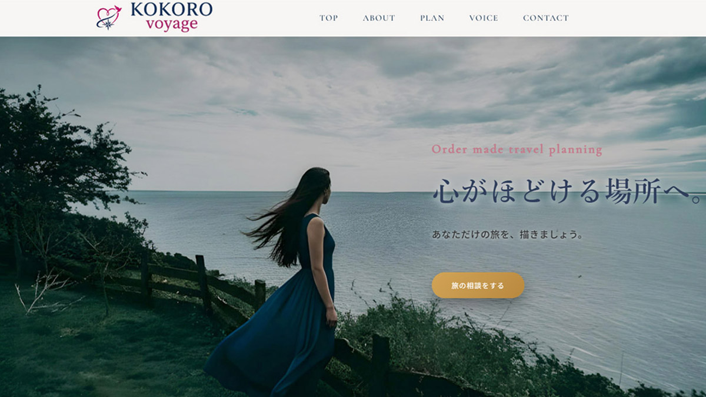
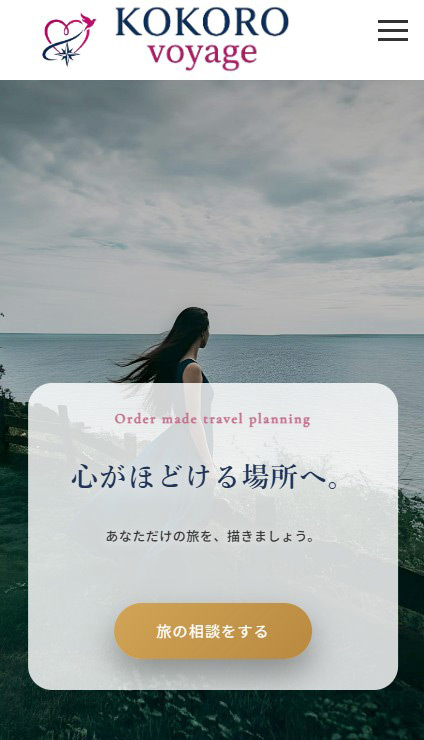

Web Site
KOKORO voyage
40代・50代女性をターゲットにした、 国内オーダーメイド一人旅サービスの架空サイトです。


概要
40代・50代女性をターゲットにした、国内オーダーメイド一人旅サービスの架空サイトです。 「自分だけの旅へ。こころがほどける、日本を探して。」をコンセプトに、 忙しい日常から離れ、自分自身と向き合う時間を提案する世界観を意識して制作しました。
担当範囲
- 企画
- 構成
- デザイン
- コーディング
使用ツール・言語
- HTML / CSS
- JavaScript / jQuery
- Photoshop
- Figma
制作意図
「心がほどける旅」をコンセプトに、 安心感と上質感が伝わるデザインを意識して制作しました。
ターゲット
子育てが落ち着き、自分の時間を持ち始めた40代・50代女性を想定しました。
工夫した点
写真選定や配色、フォントの組み合わせにこだわり、 スクロール時のフェードインなど動きのある演出を取り入れました。 また、スマートフォンでも操作しやすいレスポンシブ設計を意識し、 ターゲット層に合わせた落ち着きと余白感のあるデザインを目指しました。